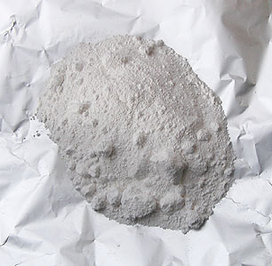
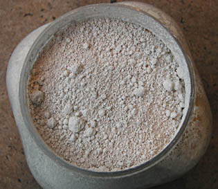

Les
blancs
English version

Blancs naturels : voir
Terres
blanches
Blancheur de la neige : voir
Chapitre XXIV
[Lectures conseillées :
Le
blanc dans la langue française, Pourpre.com
La
couleur
blanche, Pourpre.com]

Bien avant que nous utilisions des pigments blancs
bien identifiés et correspondant à des normes précises, l'humanité
mettait à profit d'innombrables produits. Différents types de recherches se dessinèrent au fil des
siècles : celle d'un blanc couvrant
et celle d'un véritable blanc lumineux.
Aucune de ces
quêtes n'est allé sans d'importantes
difficultés. Les solutions véritablement satisfaisantes sont fort récentes.
L'être humain des temps anciens partait d'un matériau imparfaitement
blanc et tentait de le décolorer. Les procédés utilisés déterminaient des enjeux commerciaux.
L'Antiquité méditerranéenne recourait à l'argile sarde ainsi qu'à
la saponaire gauloise (voir glucosides).
Ce type de procédés a été mis en oeuvre, de manière massive, jusqu'à la
Renaissance. Le travail de grattage ou d'étirement des cuirs est encore pratiqué
en différents points de la planète pour faire émerger un "blanc" relevant en
fait du domaine
chromatique de l'écru.
Le premier blanc véritablement couvrant découvert dans l'histoire humaine est
le blanc de plomb (Antiquité), malheureusement toxique. Puis, beaucoup,
beaucoup plus tard, est venu le titane (photo
ci-dessus), qui a résolu un problème millénaire, combinant opacité, innocuité et
stabilité en mélange.
Depuis, la transparence ne peut plus être prise comme un défaut mais comme une
spécificité.
Les recours anciens (parfois préhistoriques) à des matériaux
comme la laine des moutons blancs ou d'autres animaux, les coquillages, le cuir de buffle
blanc ou d'autres animaux, la soie traitée japonaise, la sulfuration des
étoffes en Europe celtique ou médiévale, le blanchissement par l'action du
soleil en Amérique centrale ou par l'action de la rosée en Europe (jusqu'au
XVIIIème siècle), etc., ont donc pris une
autre valeur.
Quant au
blanc de zinc, si l'on ne
peut pas le considérer comme couvrant, il a permis, avant le blanc de titane,
d'obtenir quand même de fort belles surfaces bien blanches et de somptueuses
vélatures.
Voir Gesso.
Le blanc est une
abstraction. Il a été défini par Newton comme l'addition de spectres d'égale
intensité (lire passage in Le corps noir). Dans les faits matériels, il n'y a pas un blanc mais beaucoup
de matières relativement peu sélectives quant au spectre. Chacune a une personnalité liée à ses composants.
Depuis longtemps, le
recours à des éléments violacés ou bleutés permet d'accentuer l'impression de
clarté pour les blancs tirant naturellement sur le jaune. On compense une
sélectivité naturelle trop manifeste par une autre sélectivité. Cela donne une
illusion efficace. L'oeil croit voir un blanc alors qu'il s'agit finalement d'un
véritable gris obtenu par synthèse de couleurs !

Il existe actuellement,
principalement, deux
catégories de blancs usuellement reconnues :
*
les blancs dits naturels
(voir photo : blanc de Meudon). Voir Terres blanches.
*
les blancs de
synthèse,
dits curieusement "blancs minéraux" (voir aussi céruse).
plus une exception :
*
le blanc
de lithopone, composé à la fois d'un blanc plus ou moins naturel
dans le sens où il dérive en principe directement des terres blanches, le blanc de baryum
(barytine), et d'un
blanc synthétique, le blanc de zinc.
Tous sont "d'origine
minérale". Le terme de "blanc minéral", par sa relative
redondance, n'a donc peut-être pas lieu
d'être tant que l'on n'évoque pas le blanc des dents, des yeux, celui du santal,
du lys, etc., certes organiques mais peu utilisables picturalement.
Retour
début de page